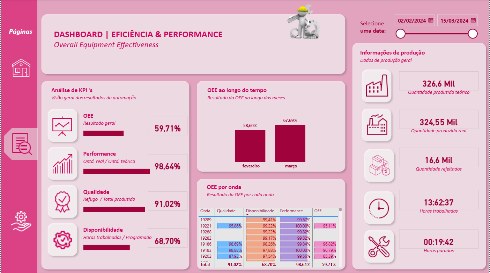
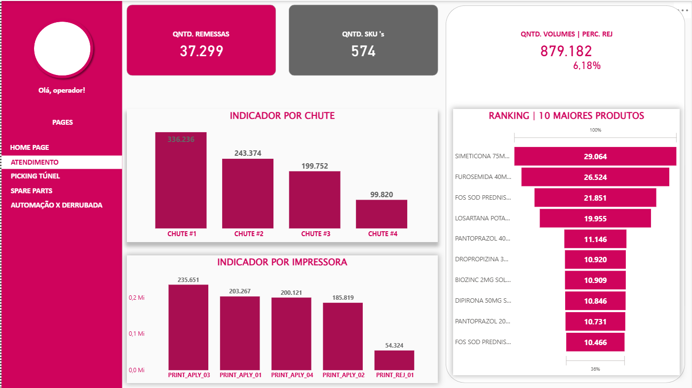
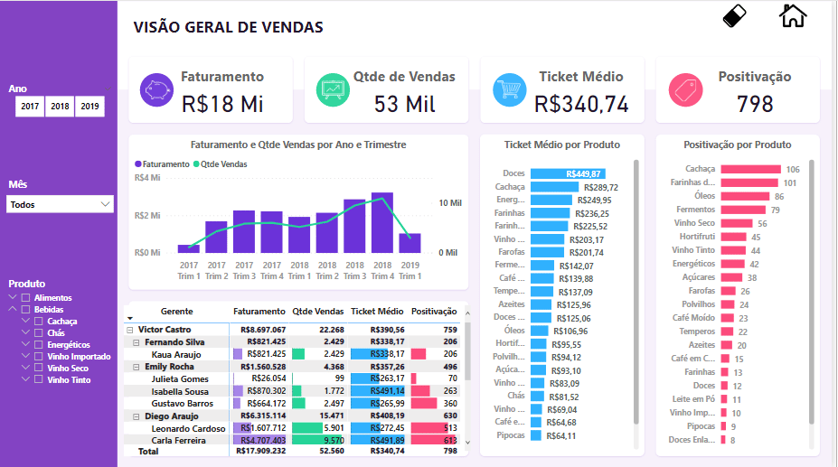

Transformo dados operacionais em visão clara para gestão.
Visão clara de indicadores-chave para tomada de decisão rápida.
Produtividade, volumes, tempos de processo e gargalos operacionais.
Organização, limpeza e estruturação de dados vindos de Excel, sistemas e planilhas.

Acompanhamento de média por hora, volumes produzidos e tempo médio de setup entre ondas operacionais.
Power BI • KPIs Operacionais
Visão consolidada de remessas, volumes processados, divergências e status operacional por período.
Power BI • Power Query
Performance de picking por operador, turno e tipo de operação logística.
Power BI • LogísticaVisão estratégica com indicadores-chave, comparativos mensais e tendências.
Power BI • Visão ExecutivaPower BI
Power Query
Excel Avançado
Integração com Sistemas
Se você já coleta dados, o próximo passo é usá-los para decidir melhor.
Falar sobre BI